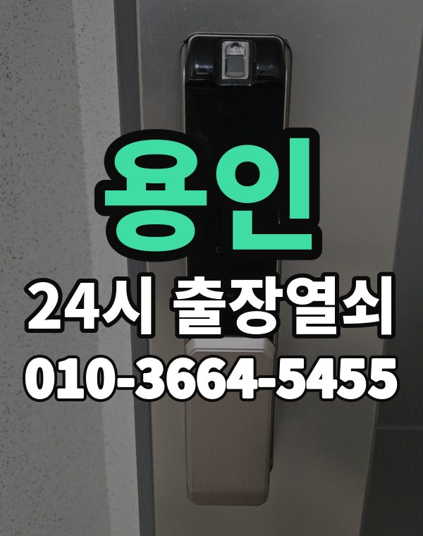

용인은 이런 곳입니다
용인은 수지, 기흥 아파트 단지와 처인구 주택가, 전원주택이 함께 있는 넓은 지역입니다.
수지와 처인구는 거리가 꽤 있어 위치에 따라 도착 시간이 달라집니다.

용인시 출장 가는 동네
- 풍덕천동
- 상현동
- 성복동
- 죽전동
- 동천동
- 신봉동
- 구갈동
- 보정동
- 동백동
- 영덕동
- 마북동
- 신갈동
- 역북동
- 김량장동
- 포곡읍
- 모현읍
- 남사읍
풍덕천동 출장열쇠, 상현동 열쇠집처럼 동네 이름으로 찾으셨어도 같은 곳입니다.
적혀 있지 않은 동네도 용인시 안이면 다 갑니다.
용인에서 하는 일
용인에서 전화 주실 때
전원주택은 대문과 현관 도어락을 같이 쓰는 집이 많습니다.
위치를 받으면 예상 도착 시간을 먼저 말씀드립니다.
수지구청역, 죽전역, 기흥역, 동백역 근처라고 말씀해 주셔도 위치 잡기가 쉬워집니다.
가까운 역이나 큰 건물, 단지 이름을 같이 알려주세요.
- 주소와 건물 이름 (아파트면 동, 호수)
- 문 종류, 번호판이 켜지는지
- 사시는 걸 확인할 신분증이나 우편물이 있는지
전화부터 작업까지 순서는 이용안내에 적어 두었습니다.
용인 출장열쇠 관련 글
- 용인 보정동 현관문 보조키가 잠겨 안 열릴 때 확인할 것과 출장열쇠 진행 순서
- 용인 보정동 데드볼트가 안 들어가거나 안 빠질 때 현관문 확인과 출장열쇠
- 용인 보정동 도어락 비밀번호가 기억나지 않을 때, 가족이 바꾼 번호 찾는 방법
- 용인 보정동 현관문 덜 닫힐 때 경첩 도어클로저 점검과 출장열쇠
- 용인 보정동 방문·화장실 문이 안에서 잠겼을 때 아이 안전부터 확인하는 법
- 용인 보정동 봄 황사 미세먼지 철 도어락 번호판 반응이 둔할 때
- 용인 기흥 보정동 빌라 다세대 현관과 공동 출입문 잠금 대처법
- 용인 동백동 베란다 미닫이 잠금장치와 방문 걸림 해결, 출장열쇠 부르기 전 점검
- 용인 동백동 열쇠가 문 안에서 부러졌을 때 출장열쇠 부르는 순서와 주의점
- 용인 동백동 아이가 안에서 문 잠갔을 때 출장열쇠 부르는 순서
- 용인 동백동 상가 사무실 도어락 출입문이 안 열릴 때 점검 순서
- 용인 동백동 도어락 앱 알림·연동이 안 될 때 출장열쇠 부르기 전 확인할 것
- 용인 수지 동천동 열쇠가 부러져 안에 박혔을 때 대처법
- 용인 동천동 카드키 태그 리모컨 잃어버렸을 때 출장열쇠 대처법
- 용인 동천동 아이나 강아지가 집 안에 있는데 문이 잠겼을 때 대처법
- 용인 동천동 연초 도어락 점검 루틴, 분기마다 10분이면 충분합니다
- 용인 동천동 도어락 교체 고민될 때, 바꾸기 전에 확인할 것과 비용 안내 받는 법
- 용인 김량장동 문이 열린 뒤 점검할 것 출장열쇠 개방 후 재발 방지 체크리스트
- 용인 김량장동 부모님 집 도어락 점검, 어르신이 쓰기 편한 설정과 문 안 열릴 때 대처
- 용인 김량장동 도어락 결로 습기 오작동, 겨울 장마철 번호판이 이상할 때 대처법
- 용인 김량장동 오래된 현관문이 안 열리고 덜 닫힐 때, 문틀 처짐과 경첩 문제 점검
- 용인 김량장동 상가 사무실 출입문 도어락 안 열릴 때 확인할 것
- 용인 김량장동 자취방과 고시원 쉐어하우스 출입문이 잠겼을 때
- 용인 김량장동 주말과 공휴일에 현관문이 안 열릴 때 연락하는 요령
- 용인 기흥 구갈동 보조키 잠금과 걸쇠 걸림으로 문이 안 열릴 때
- 용인 구갈동 도어락이 문 닫힘을 잘못 인식할 때 닫힘 센서와 걸쇠 점검
- 용인 구갈동 현관문 안 열릴 때 원인별 확인과 출장열쇠 순서
- 용인 구갈동 열쇠 잃어버리고 문 잠겼을 때 출장열쇠 부르는 순서와 확인할 것
- 용인 구갈동 도어락 비밀번호 바꾸는 주기와 가족 공유 관리법
- 용인 구갈동 자취방·고시원·쉐어하우스 출입문이 안 열릴 때 확인할 것과 출장열쇠 이용법
- 용인 죽전동 도어락 교체 전에 확인할 것, 비용은 이렇게 안내합니다
- 용인 죽전동 도어락 새로 달기 전에 문 두께와 보조키 확인하는 방법
- 용인 죽전동 열쇠가 안 돌아가거나 안 빠질 때 출장열쇠 부르기 전 확인
- 용인 수지 죽전동 열쇠 방식 문을 번호키로 바꾸기 전에 고려할 것
- 용인 죽전동 우편함 사물함 열쇠 잃어버렸을 때 확인할 것과 출장열쇠 상담
- 용인 죽전동 출장 기사 기다리는 동안 문 앞에서 할 일, 도착 전 준비 목록
- 용인 마북동 열쇠집 고르는 기준, 전화할 때 꼭 물어볼 것과 출장열쇠 확인 포인트
- 용인 마북동 도어락 설치 전 문 두께와 보조키 확인해야 할 것
- 용인 마북동 도어락 경고음이 울리고 모터 소리만 날 때, 문 안 열리는 원인 점검
- 용인 마북동 정전 때 도어락이 먹통이 됐다면 이렇게 하세요
- 용인 마북동 여분 열쇠와 보조 카드 어디에 맡기고 어떻게 보관할까
- 용인 마북동 여름 열기와 습기로 현관문이 뻑뻑할 때 점검할 것과 출장열쇠
- 용인 모현읍 도어락 카드키 태그 추가 등록과 초기화 요령
- 용인 모현읍 손님·가사도우미·돌봄 인력에게 도어락 임시 비밀번호 쓰는 법
- 용인 모현읍 장마 겨울 결로로 도어락 오작동할 때 대처법
- 용인 모현읍 문 열기 전 신분 확인 절차 열쇠집이 왜 먼저 확인하는지
- 용인 모현읍 임대인과 임차인이 도어락 문제를 정리할 때 확인할 것
- 용인 모현읍 신생아와 영유아가 있는 집 현관 잠금 쓸 때 주의할 점
- 용인 남사읍 한파에 도어락 반응이 느리거나 꺼질 때 확인할 것과 출장열쇠
- 용인 남사읍 대문 철문 열쇠가 안 돌아갈 때와 공동 출입문 점검 방법
- 용인 남사읍 문 열기 전 신분 확인 절차, 출장열쇠가 사시는 분인지 확인하는 방법
- 용인 남사읍 열쇠가 돌아가지 않거나 구멍에서 안 빠질 때 확인 순서
- 용인 남사읍 도어락 앱 알림이 끊기고 연동이 안 될 때 확인할 것
- 용인 포곡읍 명절·여행 다녀온 뒤 현관문이 안 열릴 때 출장열쇠 부르는 순서
- 용인 포곡읍 전원주택 대문·현관 열쇠가 안 열릴 때
- 용인 포곡읍 문이 잠겼을 때 이웃과 경비실에 도움을 청하는 순서와 예의
- 용인 포곡읍 비파손 개방이란 문과 도어락을 상하지 않게 여는 방법 설명
- 용인 포곡읍 오래된 문틀 처짐과 경첩 문제로 현관문이 안 열릴 때 확인할 것
- 용인 포곡읍 뒷문과 쪽문 후문 잠금장치가 말을 안 들을 때
- 용인 풍덕천동 보조키 잠겨 현관문 안 열릴 때 확인할 것
- 용인 풍덕천동 현관문 닫을 때 쿵 소리와 삐걱임 원인과 손보는 순서
- 용인 풍덕천동 수험생 학원 다니는 자녀가 늦게 귀가할 때 도어락 관리와 출장열쇠
- 용인 풍덕천동 지문 인식이 안 될 때 도어락 지문 센서 점검과 출장열쇠 상담
- 용인 수지 풍덕천동 도어락 손잡이 모양별 고장 증상 읽는 법
- 용인 풍덕천동 지문 카드 비밀번호 스마트 도어락 고르는 법과 설치 전 점검
- 용인 상현동 베란다 미닫이 문 잠금장치 안 잠기거나 안 열릴 때 점검 방법
- 용인 상현동 도어락 번호판 꺼짐, 배터리 방전일 때 출장열쇠 부르기 전 대처법
- 용인 상현동 한밤 새벽에 현관문 안 열릴 때 출장열쇠 전화 요령
- 용인 수지 상현동 원룸 오피스텔 출입문이 잠겼을 때 순서대로 하면 되는 일
- 용인 수지 상현동 어르신이 쓰기 쉬운 도어락 번호판 사용법과 소리 설정
- 용인 상현동 공동 사무실 공유 공간 열쇠와 비밀번호 관리 방법
- 용인 성복동 열쇠집 고르는 기준, 전화할 때 꼭 물어볼 것 4가지
- 용인 수지 성복동 현관문 쿵 소리와 삐걱임, 뻑뻑함 원인 정리
- 용인 성복동 부모님 집 도어락 점검, 어르신이 쓰기 편한 설정
- 용인 성복동 현관 방범 점검 요령 도어락과 문틀 직접 확인하는 순서
- 용인 성복동 도어락 비밀번호가 기억 안 날 때, 가족이 바꾼 번호 확인하고 문 여는 법
- 용인 성복동 열쇠를 잃어버렸거나 잠그고 나왔을 때 대처법
- 용인 신봉동 문 열린 뒤 점검 목록, 같은 일이 또 생기지 않게
- 용인 신봉동 복도식 계단식 아파트 현관 환경에 따라 달라지는 문 고장
- 용인 신봉동 현관 손잡이가 헐겁거나 헛돌 때 출장열쇠가 점검하는 순서
- 용인 신봉동 세입자·집주인 도어락 고장 났을 때 확인할 것과 출장열쇠 부르는 순서
- 용인 신봉동 한밤 새벽에 현관문이 안 열릴 때 전화 요령과 출장열쇠 부르는 순서
- 용인 신봉동 스마트 도어락 고르는 법, 지문·카드·번호 중 우리 집에 맞는 것은
- 용인 신갈동 문이 안 열려 출장열쇠 부르기 전에 준비할 것 사진·위치·상태
- 용인 신갈동 택배 받으러, 쓰레기 버리러 잠깐 나왔다가 문이 잠겼을 때 대처법
- 용인 신갈동 현관 안쪽 잠금 손잡이가 안 돌아가거나 헛돌 때
- 용인 신갈동 이사 후 도어락 비밀번호 초기화·재설정 방법
- 용인 신갈동 비 오는 밤 문이 안 열릴 때 출장열쇠 부르면서 알려둘 것
- 용인 기흥 신갈동 교대근무자와 새벽 귀가자의 도어락 사용 요령
- 용인 역북동 한파에 도어락이 느리거나 꺼질 때, 추운 날 배터리 대처와 출장열쇠
- 용인 역북동 현관문 틈새 바람과 소음, 문 닫힘 상태 점검법
- 용인 역북동 도어락 삑 소리가 길게 짧게 울릴 때 소리별 뜻 구분법
- 용인 역북동 이사한 날 도어락 비밀번호 초기화와 재설정, 전 입주자 번호 지우는 법
- 용인 역북동 원룸 오피스텔 출입문 잠겼을 때 출장열쇠 부르는 순서
- 용인 기흥 영덕동 가을 이사철 도어락 일정 맞추는 순서
- 용인 영덕동 아이나 반려동물이 집 안에 있는데 문이 잠겼을 때 침착하게 대처하는 순서
- 용인 영덕동 도어락이 경고음만 울리고 모터 소리만 날 때 원인 짚어보기
- 용인 영덕동 입주·퇴거 때 도어락 확인할 것, 이사 전후 번호·열쇠 정리 순서
- 용인 영덕동 도어락 비밀번호 바꾸는 시기와 가족 공유 관리 요령
- 용인 영덕동 인테리어 공사 중 현관 도어락 보호하고 임시로 쓰는 법
용인 출장열쇠 자주 묻는 질문
용인 어디까지 출장 오시나요?
풍덕천동, 상현동, 성복동, 죽전동, 동천동, 신봉동 등 용인시 전 지역 갑니다. 적혀 있지 않은 동네도 용인시 안이면 출동합니다.
용인에서 밤늦게나 새벽에도 오시나요?
시간 상관없이 출동합니다. 주소를 받으면 도착 시간부터 알려드립니다.
개방에 실패해도 비용이 나오나요?
열지 못하면 비용은 없습니다. 작업 전에 금액을 듣고 정하시면 됩니다.
본인 확인은 어떻게 하나요?
거주하시는 분인지 확인한 뒤 엽니다. 신분증이 집 안에 있으면 관리사무소 확인도 됩니다.
용인 도어락 새로 다는 것도 되나요?
네, 문 열기와 함께 도어락 수리, 설치, 교체도 합니다. 고쳐서 되면 교체는 권하지 않습니다.